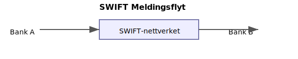

(SWIFT (Society for Worldwide Interbank Financial Telecommunication) er et globalt nettverk som muliggjør sikker utveksling av meldinger mellom finansinstitusjoner. For norske bedrifter som håndterer internasjonale transaksjoner er det avgjørende å forstå hvordan SWIFT fungerer og hvilke regnskapsmessige implikasjoner det har.)
Hva er SWIFT?
SWIFT står for Society for Worldwide Interbank Financial Telecommunication og er et globalt meldingsnettverk som forbinder over 11 000 finansinstitusjoner i mer enn 200 land. SWIFT gjør det mulig å sende og motta standardiserte finansielle meldinger, som støtter alt fra betalingsoverføringer til avstemming av bankkonti.

Kort Historie
| År | Hendelse |
|---|---|
| 1973 | SWIFT etablert av 239 banker |
| 1977 | Første meldinger sendt |
| 1995 | Over 1 million meldinger per dag |
| 2022 | Over 40 millioner meldinger per dag |
Vanlige Meldingskoder
| Meldingskode | Beskrivelse |
|---|---|
| MT103 | Kunde betalingsoverføring |
| MT202 | Bank-til-bank betaling |
| MT940 | Kontoutskrift (elektronisk kontorapport) |
Hvordan fungerer SWIFT?
SWIFT benytter et sentralt meldingssystem med følgende hovedkomponenter:
- BIC-koder for identifikasjon av finansinstitusjoner (se Hva er BIC-kode?)
- Meldingstyper (f.eks. MT103, MT202, MT940)
- Sikkerhet og kryptering for å sikre konfidensialitet og integritet
Meldingsflyt
- Bank A genererer en betalingsordre
- Meldingen sendes via SWIFT-nettverket til Bank B
- Bank B mottar og behandler meldingen
- Bekreftelse sendes tilbake til Bank A
Sikkerhet i SWIFT
SWIFT krever blant annet:
- Sterk autentisering av avsendere
- Kryptering av meldingsinnhold
- Regelmessige sikkerhetsoppdateringer og revisjoner
Regnskapsmessige implikasjoner for norske bedrifter
Bruk av SWIFT-meldinger påvirker flere regnskapsprosesser:
| Aspekt | Beskrivelse |
|---|---|
| Dokumentasjon | Sporbarhet og arkivering av internasjonale transaksjoner |
| Avstemming | Standardiserte meldinger for automatisert bankavstemming |
| Kostnadsføring | SWIFT-gebyrer bokføres som finansielle kostnader |
| MVA og valuta | Håndtering av valutakurs, kurseffekter og MVA ved grenseoverskridende tjenester |
Fordeler og utfordringer
Fordeler:
- Rask og sikker overføring av betalinger
- Standardiserte formater som forenkler integrasjon med regnskapssystemer
- Global dekning og høy tilgjengelighet
Utfordringer:
- Kostnader knyttet til SWIFT-tilgang og meldingsgebyr
- Kompleksitet i implementering og vedlikehold av tekniske løsninger
- Regulatoriske krav for sikkerhet og rapportering
Fremtidstrender
- ISO 20022-overgang for mer strukturerte data
- API-integrasjoner for sanntids validering og oppslag
- Utvikling av SWIFT gpi for økt transaksjonssporbarhet
Oppsummering:
SWIFT er hjørnesteinen i dagens internasjonale betalingssystem. For norske bedrifter er det avgjørende å mestre SWIFT for å sikre effektive og korrekte internasjonale transaksjoner, samtidig som man ivaretar god regnskapsrapportering og kontrollrutiner.